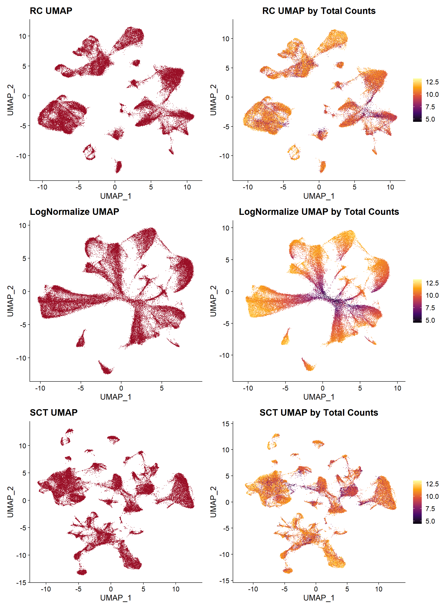

Last updated: 2025-09-02
Checks: 7 0
Knit directory: CosMx_pipeline_LGA/
This reproducible R Markdown analysis was created with workflowr (version 1.7.1). The Checks tab describes the reproducibility checks that were applied when the results were created. The Past versions tab lists the development history.
Great! Since the R Markdown file has been committed to the Git repository, you know the exact version of the code that produced these results.
Great job! The global environment was empty. Objects defined in the global environment can affect the analysis in your R Markdown file in unknown ways. For reproduciblity it’s best to always run the code in an empty environment.
The command set.seed(20250517) was run prior to running
the code in the R Markdown file. Setting a seed ensures that any results
that rely on randomness, e.g. subsampling or permutations, are
reproducible.
Great job! Recording the operating system, R version, and package versions is critical for reproducibility.
Nice! There were no cached chunks for this analysis, so you can be confident that you successfully produced the results during this run.
Great job! Using relative paths to the files within your workflowr project makes it easier to run your code on other machines.
Great! You are using Git for version control. Tracking code development and connecting the code version to the results is critical for reproducibility.
The results in this page were generated with repository version 4f19009. See the Past versions tab to see a history of the changes made to the R Markdown and HTML files.
Note that you need to be careful to ensure that all relevant files for
the analysis have been committed to Git prior to generating the results
(you can use wflow_publish or
wflow_git_commit). workflowr only checks the R Markdown
file, but you know if there are other scripts or data files that it
depends on. Below is the status of the Git repository when the results
were generated:
Ignored files:
Ignored: .Rhistory
Ignored: .Rproj.user/
Ignored: NBClust-Plots/
Ignored: analysis/.Rhistory
Ignored: data/seuAtoMx/
Ignored: output/processed_data/Log/
Ignored: output/processed_data/RC/
Ignored: output/processed_data/SCT/
Ignored: output/processed_data/exprMat_unfiltered.RDS
Ignored: output/processed_data/fov_positions_unfiltered.RDS
Ignored: output/processed_data/metadata_unfiltered.RDS
Ignored: output/processed_data/negMat_unfiltered.RDS
Ignored: output/processed_data/seu_filtered.RDS
Ignored: output/processed_data/seu_semifiltered.RDS
Unstaged changes:
Modified: CosMx_pipeline_LGA.Rproj
Modified: _workflowr.yml
Modified: output/performance_reports/0.0_data_loading_PR.csv
Modified: output/performance_reports/1.0_qc_and_filtering_PR.csv
Modified: output/performance_reports/2.0_normalization_PR.csv
Modified: output/performance_reports/3.0_dimensional_reduction_PR.csv
Modified: output/performance_reports/4.0_insitutype_cell_typing_PR.csv
Modified: output/performance_reports/4.1_insitutype_unsup_clustering_PR.csv
Modified: output/performance_reports/4.2_seurat_unsup_clustering_PR.csv
Modified: output/performance_reports/5.0_RC_normalization_PR.csv
Modified: output/performance_reports/5.1_RC_dimensional_reduction_PR.csv
Modified: output/performance_reports/6.0_Log_normalization_PR.csv
Modified: output/performance_reports/6.1_Log_dimensional_reduction_PR.csv
Modified: output/performance_reports/pipeline_PR.csv
Note that any generated files, e.g. HTML, png, CSS, etc., are not included in this status report because it is ok for generated content to have uncommitted changes.
These are the previous versions of the repository in which changes were
made to the R Markdown (analysis/norm_examples.Rmd) and
HTML (docs/norm_examples.html) files. If you’ve configured
a remote Git repository (see ?wflow_git_remote), click on
the hyperlinks in the table below to view the files as they were in that
past version.
| File | Version | Author | Date | Message |
|---|---|---|---|---|
| html | 43970ac | lga-uoc | 2025-09-02 | Build site. |
| Rmd | 1cf5794 | lga-uoc | 2025-09-02 | Edit website files |
The main objective of this normalization is to eliminate the variability introduced by technical effects while preserving biological variability [1]. According to Nanostring recommendations [2], CosMx™ SMI data should be normalize using total counts, which means dividing the counts by the total counts per cell and multiplying by a scaling factor. However, further transformations, such as log1p, square root or “Pearson residuals”, may be recommended for applying certain dimensional reduction and visualization methods, like UMAP, or for applying distance-based clustering methods [2].
In the CosMx Scratch Space vignette [3], for example, normalization is made by total counts. Afterwards, square root transformation is implemented to create a UMAP plot. Finally, downstream analysis are performed: raw counts are used for cell typing (with UMAP visualization) and normalize (non-transformed) counts are used for neighborhood expression analysis.
However, the CosMxLite vignette [4] proposes using “SCTransform”, reporting a better clustering performance when using this method in comparison to the classic log-normalization. This method, fits a negative binomial regression model to estimate gene expression from total counts and normalizes the data by calculating Pearson residuals.
Finally, in the literature, most studies apply logarithmic transformation, as it is one of the most common methods in single-cell RNA sequencing.
In this project, the code of the Normalization phase of the pipeline is parameterized, allowing the selection of a any of these three options:
For simplicity, in the main pipeline example only one method is shown — “SCTransform”. However, in this section, dimensional reduction and UMAP results from the different normalization methods can be explored to see how different the outcome is.
UMAP plotting can be useful, not only to visualize clustering results, but also to observe how are cells distributed based on different variables, such as tissues, slide, total counts, etc. This type is visualizations would help to determine if any technical factor is influencing the data and if any additional procedure is needed before continuing the analysis: increase filtering thresholds, try another normalization method, test a different number of PCs, etc.

| Version | Author | Date |
|---|---|---|
| 43970ac | lga-uoc | 2025-09-02 |
In this example, the UMAP plots in the right are by the total number of transcripts, and it can be observed that both “RC” and “SCTransform” seem to have corrected the technical effect of size coverage, while in the “LogNormalize” method, cells with low counts cluster in the center, suggesting a structure influenced by this characteristic rather than by actual biological variability.
| V1 | Chunk | Time_sec | Memory_Mb |
|---|---|---|---|
| RC | Norm | 3.87 | 349.2 |
| Log | Norm | 6.18 | 349.2 |
| SCT | Norm | 41.02 | 774.5 |
In terms of time and memory usage, methods “RC” and “LogNormalize” (including “FindVariableFeatures” and “ScaleData”) are both less memory and time consuming, while “SCTransform” requires higher computing resources, but provides a better UMAP.
Hafemeister C, Satija R. Normalization and variance stabilization of single-cell RNA-seq data using regularized negative binomial regression. Genome Biology [Internet]. 2019 Dec 23 [cited 2025 May 5];20(1):296. Available from: https://doi.org/10.1186/s13059-019-1874-1
Danaher P. QC and normalization of RNA data [Internet]. CosMx® Analysis Scratch Space. 2024. Available from: https://nanostring-biostats.github.io/CosMx-Analysis-Scratch-Space/posts/normalization/
Danaher P. Vignette: Basics of CosMx Analysis in R – Blog [Internet]. CosMx® Analysis Scratch Space. 2024 [cited 2025 Mar 27]. https://nanostring-biostats.github.io/CosMx-Analysis-Scratch-Space/posts/vignette-basic-analysis/
O Hora B, Laddach R, Nuamah R, Chiappini C, Grigoriadis A, Quist J. GitHub - cancerbioinformatics/CosMx_Lite [Internet]. CosMxLite. 2024 [cited 2025 Mar 27]. Available from: https://github.com/cancerbioinformatics/CosMx_Lite
R version 4.4.3 (2025-02-28 ucrt)
Platform: x86_64-w64-mingw32/x64
Running under: Windows 10 x64 (build 19045)
Matrix products: default
locale:
[1] LC_COLLATE=Spanish_Spain.utf8 LC_CTYPE=Spanish_Spain.utf8
[3] LC_MONETARY=Spanish_Spain.utf8 LC_NUMERIC=C
[5] LC_TIME=Spanish_Spain.utf8
time zone: Europe/Madrid
tzcode source: internal
attached base packages:
[1] stats graphics grDevices utils datasets methods base
other attached packages:
[1] viridis_0.6.5 viridisLite_0.4.2 patchwork_1.3.0 ggplot2_3.5.1
[5] SeuratObject_4.1.4 Seurat_4.4.0 kableExtra_1.4.0 dplyr_1.1.4
[9] here_1.0.1 data.table_1.17.0 workflowr_1.7.1
loaded via a namespace (and not attached):
[1] RColorBrewer_1.1-3 rstudioapi_0.17.1 jsonlite_1.8.9
[4] magrittr_2.0.3 spatstat.utils_3.1-5 farver_2.1.2
[7] rmarkdown_2.29 fs_1.6.5 vctrs_0.6.5
[10] ROCR_1.0-11 spatstat.explore_3.5-2 htmltools_0.5.8.1
[13] sass_0.4.9 sctransform_0.4.2 parallelly_1.41.0
[16] KernSmooth_2.23-26 bslib_0.8.0 htmlwidgets_1.6.4
[19] ica_1.0-3 plyr_1.8.9 plotly_4.11.0
[22] zoo_1.8-14 cachem_1.1.0 whisker_0.4.1
[25] igraph_2.1.2 mime_0.12 lifecycle_1.0.4
[28] pkgconfig_2.0.3 Matrix_1.7-2 R6_2.5.1
[31] fastmap_1.2.0 fitdistrplus_1.2-4 future_1.34.0
[34] shiny_1.10.0 digest_0.6.37 colorspace_2.1-1
[37] ps_1.8.1 rprojroot_2.0.4 tensor_1.5.1
[40] irlba_2.3.5.1 labeling_0.4.3 progressr_0.15.1
[43] spatstat.sparse_3.1-0 httr_1.4.7 polyclip_1.10-7
[46] abind_1.4-8 compiler_4.4.3 withr_3.0.2
[49] MASS_7.3-64 tools_4.4.3 lmtest_0.9-40
[52] httpuv_1.6.15 future.apply_1.11.3 goftest_1.2-3
[55] glue_1.8.0 callr_3.7.6 nlme_3.1-167
[58] promises_1.3.2 grid_4.4.3 Rtsne_0.17
[61] getPass_0.2-4 cluster_2.1.8 reshape2_1.4.4
[64] generics_0.1.3 gtable_0.3.6 spatstat.data_3.1-6
[67] tidyr_1.3.1 sp_2.2-0 xml2_1.3.6
[70] spatstat.geom_3.5-0 RcppAnnoy_0.0.22 ggrepel_0.9.6
[73] RANN_2.6.2 pillar_1.10.0 stringr_1.5.1
[76] later_1.4.1 splines_4.4.3 lattice_0.22-6
[79] survival_3.8-3 deldir_2.0-4 tidyselect_1.2.1
[82] miniUI_0.1.1.1 pbapply_1.7-4 knitr_1.49
[85] git2r_0.36.2 gridExtra_2.3 svglite_2.1.3
[88] scattermore_1.2 xfun_0.49 matrixStats_1.4.1
[91] stringi_1.8.4 lazyeval_0.2.2 yaml_2.3.10
[94] evaluate_1.0.1 codetools_0.2-20 tibble_3.2.1
[97] cli_3.6.3 uwot_0.2.3 xtable_1.8-4
[100] reticulate_1.40.0 systemfonts_1.1.0 munsell_0.5.1
[103] processx_3.8.4 jquerylib_0.1.4 Rcpp_1.0.13-1
[106] globals_0.16.3 spatstat.random_3.4-1 png_0.1-8
[109] spatstat.univar_3.1-4 parallel_4.4.3 listenv_0.9.1
[112] scales_1.3.0 ggridges_0.5.6 leiden_0.4.3.1
[115] purrr_1.0.2 rlang_1.1.4 cowplot_1.1.3